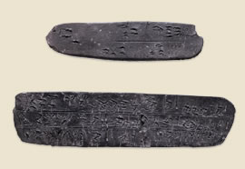

Mycenaean script developed, known as Linear BThe Mycenaeans developed a form of writing based on a Minoan script. This form of writing is today known as Linear B. It was deciphered by Michael Ventris in 1952. The information from the Linear B tablets gives information about life in Mycenaean times. 
Clay tablets inscribed with Linear B script
|